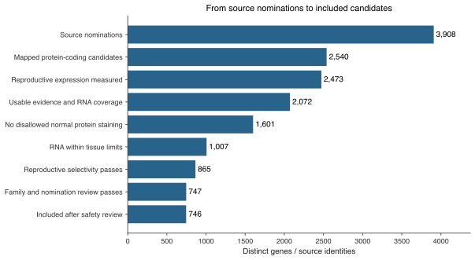

CTA curation
Which candidates pass the normal-tissue screen, what excludes the others, and where the evidence is incomplete.
21 October 2026 · Human HPA v23 · RNA ceilings start at 2 nTPM
746 included from 2,540 mapped protein-coding candidates. 98 newly included under the revised RNA ceilings.
XAGE1A and XAGE1B are both included. XAGE1B's liver 1.5 and lung 1.2 nTPM measurements now pass the general baseline.

Use the gene search to inspect results. “Included” means this research screen passes; clinical use and safety evidence are shown separately.
Find a gene
| Gene | Expression group | Result | Reason | Clinical evidence |
|---|
Open “Evidence” beneath a gene for tissue measurements, coverage gaps and primary clinical sources. Unmapped source nominations are included in this search.
Where the candidates came from
Sources overlap. These counts show the current outcome for each source and must not be added together.
| Publication / list | Source rows | Mapped coding candidates | Included |
|---|---|---|---|
| Gong et al., Nature Communications (2021) | 71 | 69 | 27 |
| Gong et al., Nature Communications (2021) | 74 | 1 | 0 |
| Bradley et al., Nature Communications (2020) | 10 | 10 | 3 |
| Wang 2016 | 1019 | 994 | 489 |
| Bruggeman 2018 | 756 | 692 | 54 |
| da Silva 2017 · testis-biased | 1103 | 1066 | 593 |
| da Silva 2017 · CT | 745 | 726 | 445 |
| Jamin 2021 | 607 | 480 | 60 |
| Jamin 2021 · core | 125 | 125 | 45 |
| Chang 2019 · TGCT | 1036 | 986 | 510 |
| Carter 2023 | 103 | 103 | 89 |
| Seager 2024 · panel | 17 | 15 | 11 |
| Loriot 2025 · strict | 146 | 117 | 97 |
| Loriot 2025 · preferential | 134 | 98 | 53 |
| Gong 2021 · reproductive coding | 744 | 728 | 497 |
| Gong 2021 · reproductive noncoding | 1067 | 5 | 0 |
| da Silva 2017 · tumor proteomics | 136 | 135 | 79 |
| Bai 2016 | 1 | 1 | 0 |
| Boël et al., Immunity (1995) | 1 | 0 | 0 |
| Garg et al., Clinical Cancer Research (2007) | 1 | 1 | 0 |
Download citations, exact source tables and counts
Compare the screens
| Screen | Included |
|---|---|
| Fixed thresholds | 708 |
| IHC-adaptive thresholds | 746 |
| Zero measured outside RNA | 216 |
Fixed uses the baseline RNA and selectivity thresholds. IHC-adaptive allows the approved relaxation for complete local negative IHC. Zero measured outside RNA additionally requires zero measured RNA in every screened normal tissue. All three retain the other screening and review gates; missing evidence never becomes zero.
Compare individual genes · All tissue measurements and IHC support
Clinical targets
Evidence describes the source. Result describes the current screen. A trial registration records an intended treatment target; it does not prove that patients were treated or that treatment worked.
| Gene | Clinical evidence | Result |
|---|---|---|
| AKAP4 | Trial registration | Included |
| BIRC5 | Trial registration | Normal protein detected |
| CLDN6 | Trial registration | Selectivity below limit |
| CT83 | Trial registration | Included |
| CTAG1A | Trial registration | Included |
| CTAG1B | Trial registration | Included |
| CTAG2 | Shared target in a clinical study | Included |
| DEPDC1 | Trial registration | Normal protein detected |
| IGF2BP3 | Published clinical study | Normal protein detected |
| KIF20A | Trial registration | Normal protein detected |
| KIF20B | Trial registration | Normal protein detected |
| LY6K | Trial registration | RNA above limit |
| MAGEA1 | Trial registration | Included |
| MAGEA10 | Trial registration | Included |
| MAGEA12 | Published safety findings | Safety hold |
| MAGEA3 | Trial registration | Included |
| MAGEA4 | Approved therapy | Included |
| MAGEC1 | Trial registration | Included |
| MAGEC2 | Trial registration | Included |
| NUF2 | Published clinical study | RNA above limit |
| PRAME | Trial registration | Included |
| PTTG1 | Trial registration | Normal protein detected |
| ROPN1 | Antigen family named in a trial | Included |
| ROPN1B | Antigen family named in a trial | RNA above limit |
| SPA17 | Trial registration | Normal protein detected |
| SPAG9 | Institutional treatment report | Normal protein detected |
| SPANXB1 | Trial registration | Included |
| SSX2 | Trial registration | Included |
| TTK | Trial registration | Normal protein detected |
| XAGE1B | Trial registration | Included |
Safety hold: external normal-tissue evidence prevents automatic inclusion. RNA above limit and Selectivity below limit: numerical failures that require review. Normal protein detected: positive IHC outside permitted tissues.
Filtering rules
Reproductive RNA must be above zero, or reproductive protein staining must be positive. Every screened normal tissue must pass both its absolute RNA ceiling and reproductive selectivity threshold.
Maximum RNA (nTPM)
| Tissue group | No usable IHC | Approved negative | Supported negative | Enhanced negative |
|---|---|---|---|---|
| Vital | 2.0 | 4.0 | 6.0 | 12.0 |
| Protected | 6.0 | 8.0 | 12.0 | 24.0 |
| Manageable | 10.0 | 20.0 | 30.0 | 60.0 |
IHC is antibody staining in normal tissue. Negative means “Not detected.” The confidence labels are HPA reliability categories. Relaxation requires negative results in all routine cell types measured in that tissue. Any positive IHC, including Low, excludes in Vital, Protected or Manageable tissues.
Minimum reproductive selectivity
Highest reproductive RNA ÷ (highest reproductive RNA + that tissue's RNA). In the same column order: Vital 75 / 70 / 65 / 60%; Protected 70 / 65 / 60 / 55%; Manageable 65 / 60 / 55 / 50%.
These are project screening parameters. Read the full tissue definitions and citations.
BAGE and GAGE2B
The genes are present in source nominations. The missing piece is a unique usable reference mapping and gene-specific expression data.
BAGE: no current Ensembl 116 symbol lookup or cross-reference was returned. Its HGNC/NCBI identity remains recorded.
GAGE2B: the historical ENSG00000231850 record ended at GRCh37/release 75. Current cross-references point to GAGE2A's record and link several GAGE2 genes. This is not a unique GAGE2B locus, so GAGE2A expression is not silently substituted.
Gene and protein sets
The three main expression groups are Reproductive, Normal and Other. Other contains Disposable and Silent below-threshold expression. Unassessed remains separate.
Exact protein sequences are assigned once, with Normal taking precedence over Unassessed, then Reproductive, then Other. All complete isoforms are considered. Distinct proteins can still share k-mers, so the exclusion step must compare their actual substrings.
Downloads

Publication sources, earlier reports and complete audit files